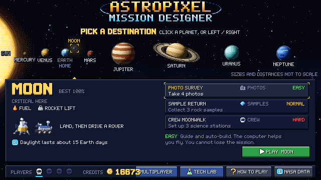
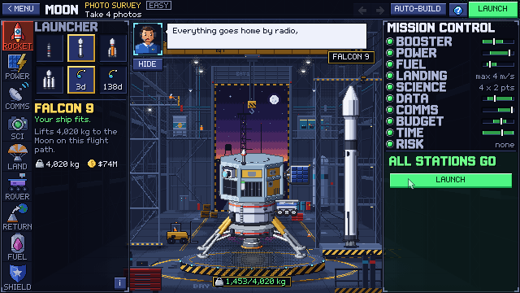
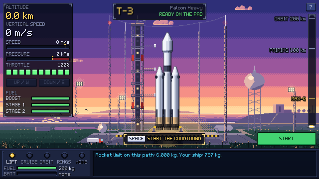
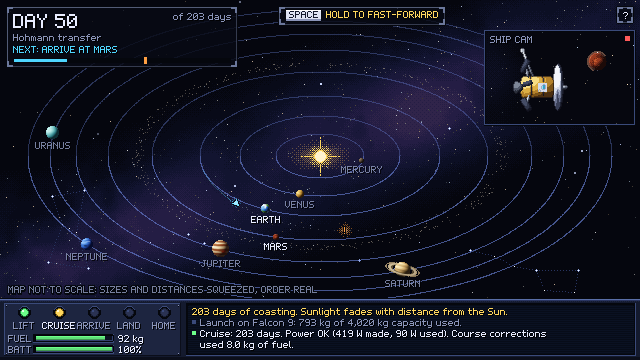
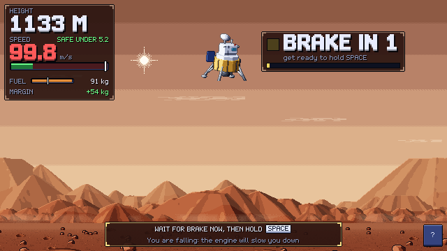
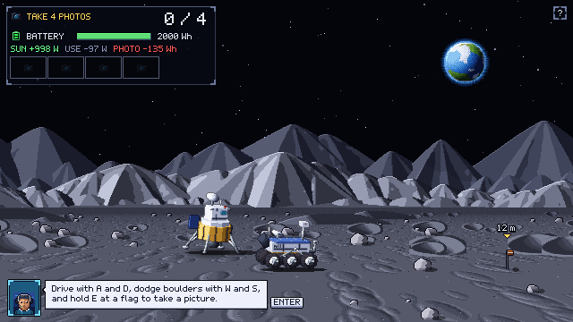
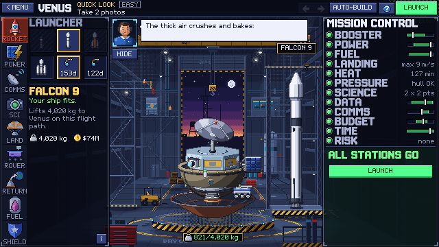
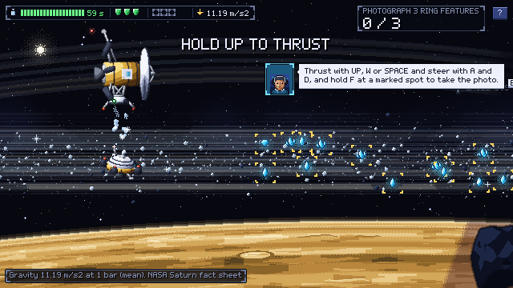

Design a spacecraft, launch it and fly the whole mission, as a team of up to 4, with real NASA numbers. When it fails, the game tells you why.

NASA asked for an interactive game where people design, manage and simulate a complete space mission: make engineering decisions, manage limited resources, and see how each choice shapes success or failure.
Students and aspiring engineers, including people with little prior knowledge. Beginner/Youth and Intermediate levels.
Objective → requirements → spacecraft → instruments → launcher and orbit → budget, mass, power, comms, data and time → simulate → feedback.
Single player or a team of up to 4 with roles, real trade-offs, and feedback that rewards good engineering and efficient use of resources.
Orbits in one class, rockets in another, power and radios somewhere else. Students almost never get to run a whole mission from idea to operation, where every choice affects every other one.
Existing tools cover orbital mechanics, spacecraft design or rocket launches on their own. They don't show how the parts interact as one system.
A mission can fail because of mass, power, data or one missing part. Without an explanation, failure just feels random.
NASA designs missions with whole teams of specialists who must agree. Most learning games are single-player.
Pick a world, pick a task, build a ship from real NASA-sourced parts, pass Mission Control's GO / NO-GO, then fly it: launch, cruise, land or orbit, explore, and send the science home. The report explains what worked, what failed and why.
Moon, Mercury, Venus, Mars, Jupiter, Saturn, Uranus, Neptune. Each has 3 tasks: Easy, Normal and Hard. Easy guides you; Hard has no hints, and you can fail.
29 parts snap onto the ship. Live gauges for mass, power, fuel, data, comms, budget and time.
Planner, Engineer, Scientist and Comms Officer. Online, each player owns their part and must sign off before launch.
Four scores, a letter grade, a flight log of every cause, and the real NASA mission your design is like.
| Existing | What it does | What AstroPixel adds |
|---|---|---|
| Kerbal Space Program | Fun rocket building and orbital flight | Mission-design trade-offs (budget, data, comms, time), real NASA sources for every number, a report on why it failed |
| NASA Webb Build It Yourself | Design one telescope, solo, then compare it with real missions | 8 destinations, landers, rovers and drones, 4-player roles, random events from real missions, and you fly it yourself |
The same flow NASA uses, start from the goal and work backwards to the spacecraft.
Click a planet. The card shows what's critical there (fuel, power, time…), the hazards, and 3 tasks. The task sets the difficulty: Easy gives a guide and auto-build, Normal gives hints and SHOW ME but no auto-build, Hard only the GO / NO-GO lamps. Mission Control then explains the task in plain words.
Pick a rocket, a flight path and parts. Every part has real mass, power, cost and data. Mission Control lamps turn green only with NASA's margins kept, and say in plain words what's wrong.

Fly the launch yourself: throttle, max-Q, staging, fairing, deploy. Too heavy for the rocket? It won't reach the right speed.

Months or years pass on the real flight path. Decision events from real missions hit the ship, including real 2024 solar storms from NASA's DONKI database. Each role decides its own events.

Hand-fly the landing in real gravity, drive the rover to the rocks, or fly a sampling drone on cold nitrogen jets (like NASA's MMU jetpack) through a giant planet's rings.

Four scores (mission success, science value, resource efficiency, good decisions), a grade, the cause chain, and the real mission to compare with. Earn credits, unlock tech in the Tech Lab, redesign.



| The challenge asks for | AstroPixel |
|---|---|
| An interactive game with a clear interface | ✓ Every screen says in one line what to do now |
| Mission configuration | ✓ Destination → task → rocket → flight path → parts |
| Resources: mass, power, budget, data, comms, time | ✓ Live gauges for all six plus fuel; the critical ones are marked for each world |
| Check the spacecraft fits the launcher | ✓ Real rocket capacity per destination and path; a 35% lift margin |
| Simulation and evaluation | ✓ Launch, cruise, arrival, landing or orbit, surface or drone, return or downlink |
| Up to 4 players, with roles | ✓ 1–4 players online, one role each, shared builder, sign-offs, requests and quick chat. Solo plays all roles |
| Negotiating competing priorities | ✓ Each role owns its parts; others must REQUEST changes; any change clears everyone's signature |
| Reward efficient resource use | ✓ UNDER / WELL USED / OVER rating per resource and a Resource Efficiency score |
| Feedback on why it worked or failed | ✓ Flight log cause chain, "the lesson", and the real mission to compare |
| Difficulty levels and scenarios | ✓ 8 worlds × 3 tasks. Easy: guide, auto-build, the computer helps you fly, you cannot lose, and you can retry from the last checkpoint. Normal: hints and SHOW ME but no auto-build; mistakes cost samples or science. Hard: no hints, no auto-build, more events, narrow windows, and a crash or empty battery ends the mission |
| Random events | ✓ 20 decision events on the way and at the site, each a true NASA or partner-agency story. Higher difficulty makes every loss and risk bigger. Losses show in red, risks in yellow, gains in green |
| Teach the science inside the game | ✓ Mission Control explains every task (what to do, why it matters, what to watch) and introduces every event; plain-word hints, NASA facts on screen, formulas and sources on hover, a NASA DATA screen |
| Redesign and fly again | ✓ One click back to the hangar; credits unlock better parts |
Every number lives in one file, data.gd, with a source next to it. Real values name their source. Values we chose for gameplay say "game rule". Take out the NASA data and the physics stops being real.
| Topic | Real science | What happens in the game |
|---|---|---|
| Fuel | Rocket equation Δv = Isp·g₀·ln(m₀/m₁), Isp 300 s (NASA GMAT default) | Heavier ship → more fuel → heavier ship. Run out while braking and you fly past the planet |
| Solar power | Sunlight falls with distance² from the Sun; arrays lose 5% a year (GMAT) | Saturn gets ~1% of Earth's sunlight: solar ships go dark, so you need nuclear power |
| Nuclear power | MMRTG: 110 W, 45 kg, 14-year life (NASA fact sheet) | Works at any distance and through the night, but heavy, costly and slow to approve |
| Batteries | Li-ion 150–270 Wh/kg (NASA Small Spacecraft Technology 2026) | Mars nights last 12.3 h; a Venus lander lives 127 minutes on batteries alone |
| Radio | Signal falls with distance² from Earth; MRO 6 Mbps, LRO Ka-band 100–300 Mbps | Far worlds need a big dish, or the science never reaches Earth |
| Margins | JPL Concept Maturity Level 4: 35% mass, power and energy, 3 dB link; NASA Discovery: 25% cost reserve | A gauge turns green only with NASA's margin kept, just like a real design review |
| Landing | Real surface gravity from NASA fact sheets; air or no air | Moon: engine only. Mars: heat shield + parachute (Perseverance). Venus: the thick air does the braking |
| Hazards | Mercury sunlight 9,083 W/m²; Jupiter radiation (Juno's titanium vault) | No sunshade → electronics cook. No shielding → parts fail |
| Space weather | NASA DONKI: 15 real geomagnetic storms of 2024, up to Kp 9 (10 May 2024) | A real storm hits during cruise. Kp ≥ 7.5 is severe: 70% damage chance unless shielded |
| Resource | Where it is in the game |
|---|---|
| NASA Design and Develop Science Missions | Goal-first flow; the 4 mission segments became our 4 roles |
| NASA GMAT | Engine Isp 300 s and the solar-array ageing model (GMAT default values) |
| JPL Concept Maturity Levels | The margins and the green / yellow / red GO / NO-GO review |
| NASA Goddard Mission Design Lab | Engineering seats grouped into 4 roles; the parts bin works like an equipment list |
| NASA Webb Build It Yourself | "Your design is like…" real-mission comparison in the report |
| NASA DONKI (space weather) | Real 2024 geomagnetic storms during cruise |
| NASA Planetary Fact Sheets | Gravity, sunlight and distance for all 8 worlds |
| NASA MMRTG fact sheet | The nuclear power part |
| NASA Small Spacecraft Technology 2026 | Solar array and battery parts |
| NASA NSSDCA: MRO, LRO; MRO instruments; Cassini MAG | Dishes, data rates, camera, spectrometer, magnetometer |
| Mission pages: Apollo 11, Perseverance, Cassini, Juno, MESSENGER, Voyager, CAPSTONE | Real flight paths and times, braking burns, the parachute, airbags and the ring drone idea |
| Partner agency: ESA Venus Express, ESA BepiColombo | Venus and Mercury flight paths |
| World | Gravity m/s² | Sunlight W/m² | Real flight path | What it teaches |
|---|---|---|---|---|
| Moon | 1.62 | 1,361 | 3 days (Apollo 11) or 4.5 months (CAPSTONE) | Fuel vs mass |
| Mercury | 3.70 | 9,083 | 6.6 years, 6 flybys (MESSENGER) | Heat, and fuel to brake |
| Venus | 8.87 | 2,601 | 153 days (Venus Express) | Pressure, heat, 127 minutes |
| Mars | 3.73 | 586 | 203 days (Perseverance) | Air, night, signal delay |
| Jupiter | 25.92 | 50.3 | 4.9 years (Juno) | Radiation |
| Saturn | 11.19 | 14.8 | 6.7 years (Cassini) | Power and data far away |
| Uranus | 9.01 | 3.69 | 13 years (NASA orbiter study) | Time and budget |
| Neptune | 11.27 | 1.51 | 12 years (Voyager 2) | The slowest radio link |
Full NASA data sheet (PDF, 3 pages): every resource with its link, where it is in the game, the formulas, all 8 destinations, the 20 real stories behind the events, and what we invented.
DOWNLOAD PDFFree in any browser, no install and no login, so any school or student can play. Explains the science in plain words, for beginners and engineers alike.
The whole mission chain in one game, played as a team of 4 roles who must negotiate, with events taken from real missions and a ring-sampling drone.
Real physics (rocket equation, inverse-square power and radio, real gravity). Every number sourced; invented ones labelled. A complete, playable loop on 8 worlds.
Answers every point of the challenge (table above). NASA data drives the results: fact sheets, DONKI storms, JPL margins, GMAT values, NASA part specs.
Pixel art made entirely by our own code and Blender scripts, synthesized sound, and one clear line on every screen telling you what to do next.
Robotic missions only. Flight times and speed changes come from real missions and textbook maths, not full GMAT runs. Online play needs our relay server.